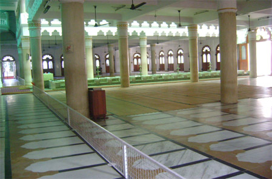
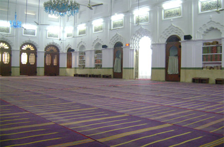
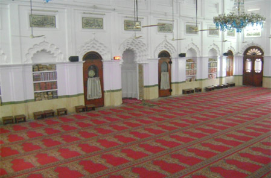
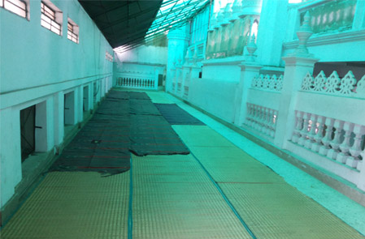
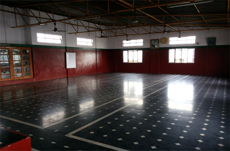
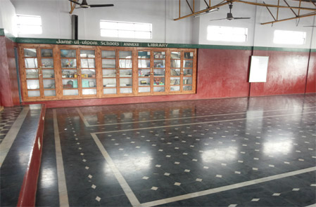
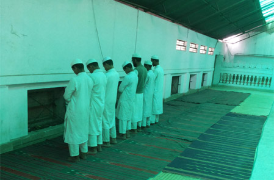

Home / Jamia Masjid
Jamia Masjid, Bangalore
The mosque at City Market, on whose campus Jame-ul-uloom functions: prayer times, the Trust’s charitable activity, photographs and historical documents.
Prayer times
- Fajar5:40 AM
- Zohar1:30 PM
- Asar5:00 PM
- Magrib6:35 PM
- Isha8:15 PM
Prayer times change through the year; please confirm with the masjid office on 0822239495.
About Jame-ul-uloom
Jame-ul-uloom is an Arabic name meaning “Center of Knowledge”. Jame-ul-uloom is housed in the campus of Jamia Mosque, one of the biggest mosques in the state, located in the heart of the Bangalore City. Apart from imparting education, the Institution aims at “character building”. This is achieved through moral education and religious instruction.
Upliftment of the downtrodden in the Minority Community is the aim of Jame-ul-uloom. It also aims in preparing good and useful citizens, so that they can face the situations in this world of competition. To accomplish many such purposes, Jame-ul-uloom has in its fold institutions.
The uniqueness of Jame-ul-uloom is that it is probably a single institution which is functioning under the aegis of a mosque imparting modern education along with moral religious education in the light of Holy Quran and Hadith. About a dozen teachers including Hufaz and Moulvies are employed for the purpose. All the classes right from L.K.G to PUC will have one Arabic teaching period on all working days. On every Thursday in the last two periods a religious congregation, “ijtima” is conducted for all the girl students. Separate arrangements are made for adult education by a well qualified teacher outside the working hours of the school.
Charitable activity
In general a Masjid committee is formed to look after Masjid activity whereas Jamia Masjid has added one more activity, i.e. Charitable activity, which means to take care of muslims educational needs so as to make every muslims future very bright, particularly those who are unable to get educated due to poverty.
Read the founding story and the Founder Secretary’s essays →
Photographs

Jamia Masjid, prayer hall 
Jamia Masjid, prayer hall 
Jamia Masjid, prayer hall 
Jamia Masjid, corridor 
Hall 
Hall with book cabinets under a “Jame ul uloom School Annex Library” sign 
Prayer in the corridor
Historical documents (Urdu)
Two Urdu PDF documents about the Jamia Masjid are available to read and download below.
Masjid Tareeq (Urdu)
23-page Urdu document printed as “Jamia Masjid in the mirror of history”
Majalla Qurbani (Urdu magazine)
51-page Urdu magazine issue of the Jamia Masjid